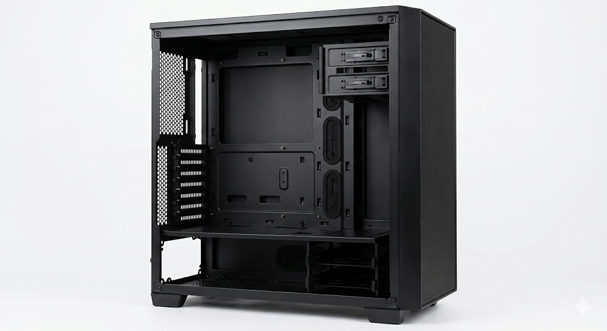
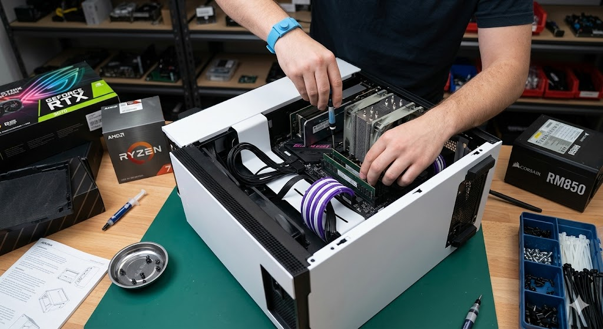
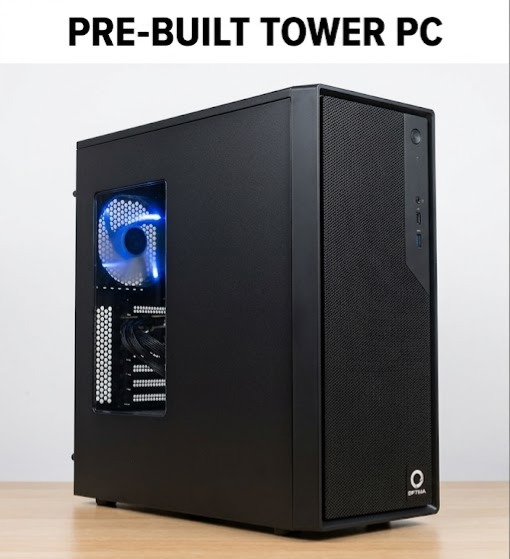
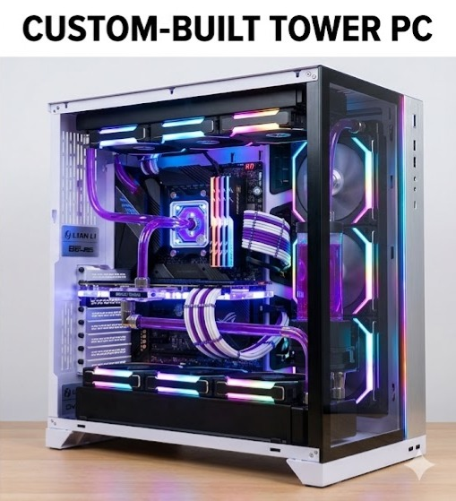

About me / about the site.
Greetings, my name is Justin Johnson I'm 25 years old and my goal is to become a full stack developer. However before really delved into software i was really big on PC building. Over the years I've built two PC's one from the money i gained at my first job, a simple tower for gaming. Years later i gave my PC to my cousin and built a second one, much more powerful and custom water cooled. I got into PC building from the internet after watching a few videos and tutorials, its an expensive but rewarding hobby.
This multi-paged website will serve as an infographic for PC building as a bobby, with lists, tables, and pictures of PC building. The top header can be used to navigate the many pages.

Computer building
Hobby styled Computer Building is the process of researching or watching tutorials online about assembling parts. Buying and self assembling computer parts and troubleshooting problems. The hobby mainly focuses on hands on work and requires somewhat of a steady hand and a little knowledge on how computers work. The biggest comparison is "Adult Legos" however while legos are great for display computer building is much more rewarding. The hobby doesn't end after the power light turns on, enthusiasts will often research and stay up to date with trends on parts and software.
Computer Parts:
- PC Case: Optional
- Motherboard
- Power Supply
- Storage: Hardrive and or Solid State Drive
- Graphics Card
- CPU: Central Processing Unit
- Cooling: Air or Liquid
- External IO: Monitor, Mouse, Keyboard, etc.


Used AI to generate a picture of a CPU and an empty pc case.
Best times and places for PC building
The best time to build a pc is when all the parts have been purchased and set aside, the time it takes to a build one varies depending on familiarity and skill. Starting out you should set aside an afternoon and a nice clean static free place for building and troubleshooting the first boot. For purchasing parts events like black Friday and cyber Monday are great for obtaining deals, websites like Amazon and Newegg are great sources for parts. Lastly the times before or after the drop of new tech mainly CPU's and GPU's the previous generations parts go on sale.

Used AI to generate a picture of a sale poster for Black Friday and Cyber Monday.
Best places
As stated in the previous section online stores like Amazon and Newegg have tons of choices and deals in pc parts. For compatibility and exact size limits pcpartpicker is an excellent choice for planning your pc's budget and needs. For in person retailers Micro Center is trusted in the community with a vast stock of parts and even advice on pc building, another choice would be Best Buy having a smaller but decent selection.
| Part Name | Best Place to Buy | Average Price | Best Brand |
|---|---|---|---|
| CPU | Micro Center | $200 - $500 | AMD |
| Graphics Card | Newegg | Mid: $700 - 1100 / Entry level: $300 - $500 | Nvidia |
| Motherboard | Amazon | Mid: $110 - $180 / Entry level: $60 - $110 / High end: $180 - $300 | MSI |
| Hardrive / SSD | Micro Center | 4TB - 5TB: $100 - $160 / 10TB - 16TB: $250 - $350 | Seagate |

Used AI to generate a picture of the inside of a store while a sale for pc parts is ongoing.
Build Guide
Building a PC step by step is a big step for any tech hobbyist the main challenge comes from compatibility whether it be size or software. Forming a plan in advance is important, you cant just flood the floor with parts and pick them some are fragile and some are small, organization is key. Its better to have all the parts ready at once, while building a pc as you buy the parts is possible its not recommended. Lastly before getting into the checklist make sure there's very little to no static on or around you, shocks can short and destroy pc parts.
- Plan and Size PC
Plan out what type of PC you want the main two are Gaming and Productivity, going for both usually means sacrificing some features. Next plan out your budget, its financially responsible to set a limit before purchasing any parts and to only exceed this if necessary. Ensure the parts are compatible the CPU whether Intel or AMD only work with specific motherboard socket types and those same motherboards only work with certain RAM modules. All of the components will need power so a power supply with enough output will be needed, all in a case with the correct dimensions.
- Layout Parts
For screwing in parts a small screw driver will do but a Phillips head #2 is preferred. Build on a non carpeted surface with an anti static wrist band, also try touching the metal part of the pc case to ground yourself. Organize the parts in a well lit and clean area for easy access and retrieval.
- Assemble Motherboard Components
With the motherboard out and ready 'use the box as a work pad' first install the CPU in the square shaped socket latching it down when done. The RAM slot, 2 sometimes 4 will be next to the CPU socket. If you only have two RAM sticks use slots 2 and 4 for best performance. Next install the M.2 drive if one is present, consult the motherboards Manuel the slot should be under a detachable heatsink south of the CPU socket. Then carefully install the graphics card fan side down in the top most PCIE slot, gently push it in until you hear a click. Lastly with a pea sized drop of thermal paste mount the CPU cooler making sure the copper part is touching the top of the CPU.
- Secure Motherboard and Case Components
Most motherboards come with an IO shield, this should be installed in the case first make sure its nice and snug at the back of the pc case. Screw in the standoffs these will keep the motherboard up off the back of the case, then line up the motherboard and screw it into the standoffs. The power supply should have its own compartment or go at the bottom of the case with the switch and in plug facing out and the out plugs facing in. The Hardrive will then go into a drawer or be screwed into a trey near the front of the case.
- Wire It Up
Now we must connect our components together, from the power supply the 24 pin connecter should be connected to the motherboards 24 pin socket and the 8 pin CPU power cord should be installed. The graphics card being such a powerful piece of tech needs a direct line to the power supply so install the PCIe power cable from the power supply to the 4/8 socket on the graphics card. The front panel buttons on the PC case have connecters that will need to be plugged into the motherboard, the Manuel will have the header pin layout. Connect the SATA and power cables to any Hardrives in the PC.
*Due note the order of this isn't important and should be done in a way to maximize cable organization.*
- Attempt First Boot - Install OS
With all the labeled wires connected and the power supply switch flipped on plug in the PC and press the cases power button, if everything was installed correctly the PC should boot to a black screen waiting for a OS to be installed. The motherboards Manuel should contain the specific button that needs to be pressed on start up to reach the bios. An OS boot drive should be inserted and the direction followed to set up your brand new PC.

Used AI to generate a picture of a PC being built.
Why should you build your own PC?
Why build one, especially when buying one is so much cheaper well for starters building a PC and using it a huge achievement and a great conversation starter.
Some of the main benefits are:
-
Cost Effectiveness
Building a PC is better in the long run as parts can go on sale and be mixed and matched for the best deal. A newly build PC doesn't come with unnecessary bloatware that creates pop ups and slows down the system.
-
Full Customization
A custom built PC can be personalized much more than one bought already built.
-
Better Longevity
Better custom cooling options means parts will work better and last longer.


Used AI to generate a picture of a prebuilt pc and a custom pc.
Ai prompts
AI was only used to generate photos.
- Generate a picture of a custom built pc
- Generate an image of pc parts going on sale
- Generate pictures for black Friday and cyber Monday for pc parts
- Generate two pictures one of a prebuilt tower pc and the second on a custom pc
- Generate a picture of a CPU
- Generate a picture of an empty pc case